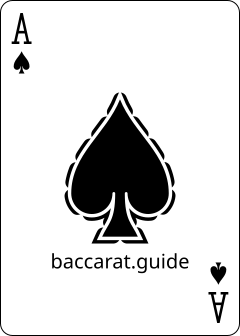
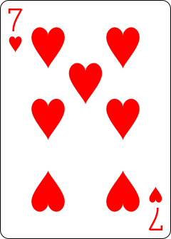
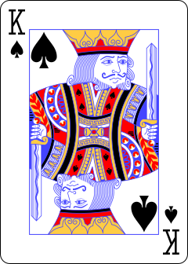
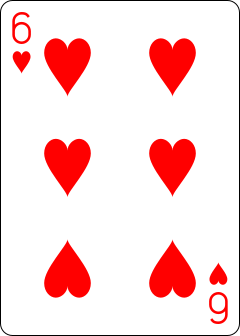
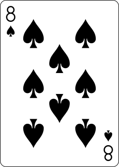
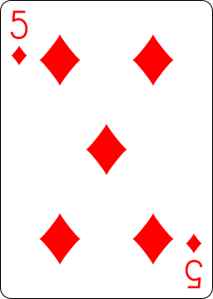
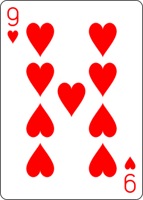
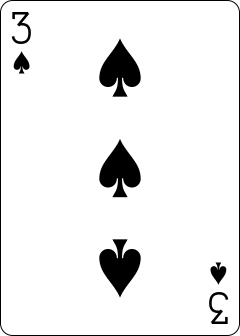
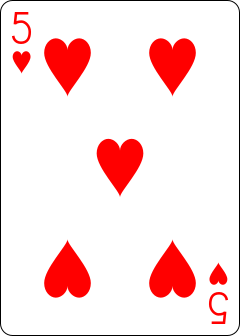

Ace
Counts as 1
One point — always. The Ace is the only court-or-A card that doesn't count zero.
the simplest game in the casino
An introduction to the rules, odds, and discipline. No strategy, no skill — you wager on which of two hands finishes closer to nine.
Baccarat is the simplest card game in the casino. You don't play the cards — you bet on which of two hands will win. The dealer does everything. No strategy, no decisions, no skill required.
Two hands are dealt: one called Player, the other called Banker. They have nothing to do with you — they're just labels for two stacks of cards. Whichever hand ends up closer to a total of 9 wins. Your only job is to bet on which one.
Forget Blackjack. In baccarat the math is simpler than it looks: count up the cards, drop the tens digit. A hand is always worth 0–9. That's it.



Aces = 1 · 2 through 9 = face value · 10 / J / Q / K = 0 · Suits don't matter.
A baccarat shoe holds 6 or 8 standard 52-card decks, shuffled together — 312 to 416 cards. Suits are ignored; only the rank matters. Every draw follows a fixed table called the tableau, so the dealer never decides.
The dealer places a cut cardThe Cut CardA coloured marker slipped near the back of the shoe before play begins. When it surfaces during a coup, the current hand is finished and the shoe is then re-shuffled. near the back of the shoe. When it appears, the current hand finishes and the shoe is re-shuffled. Before the first hand, the first card is turned face-up; its value tells the dealer how many cards to burnThe BurnTo discard cards face-down from the top of the shoe before the first hand. The first card is flipped face-up and its value sets how many cards follow it into the discard tray.. The burn has no effect on odds — it's tradition.
Baccarat uses the modulo-10 rule. Every card has a value, totals are added, and only the last digit of the sum counts. A hand is always worth zero through nine — never more.
One point — always. The Ace is the only court-or-A card that doesn't count zero.
A 7 is worth seven, a 5 is worth five. Suits never matter — only the rank.
10, Jack, Queen, King — every face card adds nothing. This is what makes baccarat math feel odd at first.
Each tab works through one example — when totals double up, what court cards add (zero), and when a hand ends on the spot.


A 6 and an 8 add to 14. Drop the leading "1" and the hand is worth 4. Any total of ten or more loses its first digit — that's the entire modulo-10 rule, in one move.

A King is worth ten — and ten is the same as zero in this game. So a King and a 5 is just 0 + 5 = 5. Tens, Jacks, Queens, Kings: every face-card adds nothing.


9 + 9 = 18. Drop the 1 and you're left with 8. It looks like a monster hand at first glance, but a natural nine on the other side will still beat it.


Any two-card total of 8 or 9 is called a natural. The coup ends right there — no third card is drawn for either side, no further plays. Closest to nine wins outright.
Scroll through the six steps below to walk a single coup — one complete hand, from wager to payout.
Every baccarat hand (a coup) runs the same way: four cards face-up, totals compared, a possible third card — all on fixed rules, never player choice.
You don't need to memorize any of this. The dealer applies these rules automatically — this section just explains whyWhy it's so asymmetricBecause Banker acts after Player, the house gets to react to Player's third card. That tiny informational edge is the root reason Banker wins ~50.68% of resolved hands — and why the casino charges a 5% commission on Banker wins to bleed that advantage back. the cards came out the way they did.
| Two-card total | Action | Reasoning |
|---|---|---|
| 0 · 1 · 2 · 3 · 4 · 5 | Draw a third | Low total — improve the hand. |
| 6 · 7 | Stand | Strong enough. Don't risk busting. |
| 8 · 9 | Natural — coup ends | Highest totals. No more cards. |
If Player stood (6 or 7), Banker follows the same rule as Player: draw on 0–5, stand on 6–7. If Player drew, use the table below.
| Banker | Draw if Player's 3rd is… | Stand if… |
|---|---|---|
| 0 · 1 · 2 | Always draw | Never |
| 3 | 1, 2, 3, 4, 5, 6, 7, 9, 10 | Only 8 |
| 4 | 2, 3, 4, 5, 6, 7 | 0, 1, 8, 9 |
| 5 | 4, 5, 6, 7 | 0, 1, 2, 3, 8, 9 |
| 6 | 6, 7 | 0–5, 8, 9 |
| 7 | Always stand | Always |
| 8 · 9 | Natural — hand ended before Player drew | |
The grids on every baccarat table are called roads (路 lù). They record which hand has been winning. Each hand is independent, so roads don't predict anything — but in Macau they're a cultural staple.
A new column starts whenever the winner switches from Player to Banker. Long vertical columns are streaks — the famous "dragon." Frequent switches are choppy. This is the only road that records the actual results; everything else is derived from it.
Derived from the Big Road. Tracks whether the columns are regular (similar lengths — red dot) or irregular (changing lengths — blue dot). Pure pattern analysis on top of pattern analysis.
Like Big Eye Boy but skips one more column back when comparing. Used alongside the others to triangulate perceived trends in the shoe.
Named for the chaotic zigzag it produces. Skips three columns for its comparison. Almost nobody outside Macau understands it fully — and it's no more predictive than a coin toss.
Punto Banco offers three main wagers. Their house edges are very different — knowing which is which is the most useful thing on this page.
Banker wins slightly more than Player because Banker acts second and can react to Player's draw. The casino offsets this with a 5% commission on Banker wins, which leaves a house edge of just 1.06% — one of the lowest in any casino game.
Tie pays 8:1, which sounds huge, but the true odds are closer to 9.5:1. That gap is where the house hides a monstrous 14.36% edge — more than ten times the Banker bet. At some UK casinos tie pays 9:1, trimming the edge to ~4.85%, still far worse than Banker or Player.
Casinos have invented dozens of side bets: Pair, Big/Small, Dragon Bonus, Perfect Pair, Egalité (specific tie totals). House edges range from 4% to over 30%. They make the game feel livelier. Ignore them.
None of these will beat the casino. What they give you is a rule for how much to bet next. A betting system is a discipline tool, not a winning formula.
Everything you've just read, in a live deck. Pick a chip size, choose Player, Banker, or Tie, and deal. The tableau runs automatically. Bankroll, streaks, and stats are tracked live.
Two cards are dealt to Player and Banker. Cards 2–9 count face value, 10s and courts count zero, Aces count 1. Hand totals drop the tens digit (so 7 + 8 = 15 → 5). A third card may be drawn for either side following a fixed tableau the dealer handles for you. Closest to 9 wins.
Rules and odds tell you how the game works. These five habits decide how long your bankroll lasts and what you walk away with.